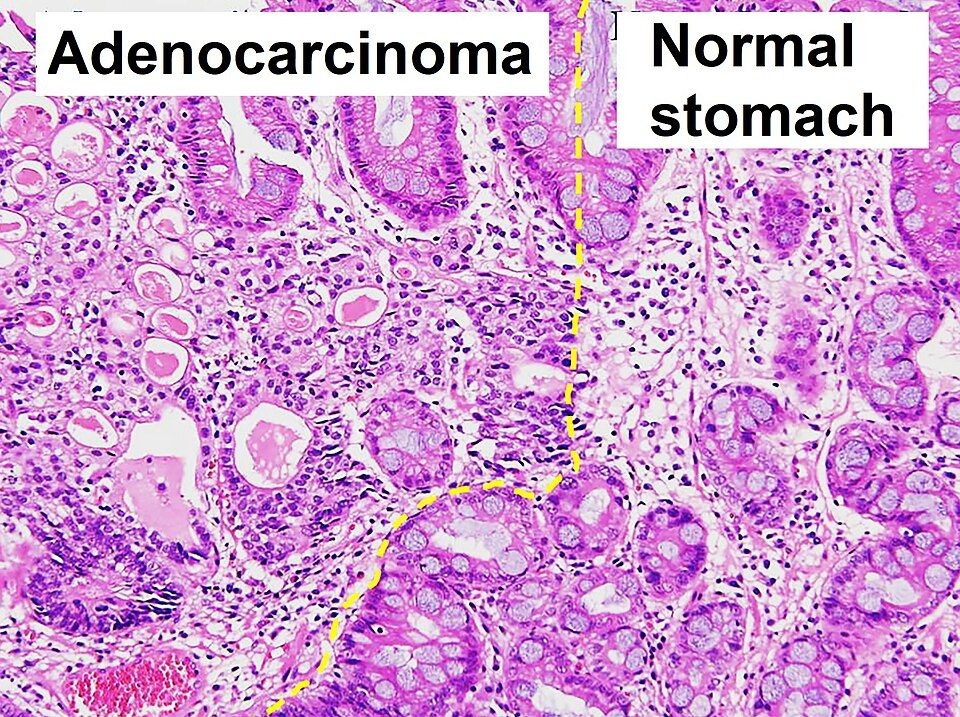

General information only. It does not replace advice from your care team and should not be used to choose a treatment.


At a glance
| Frequency | About 970,000 cases a year worldwide (GLOBOCAN 2022) and about 7,000 in Spain |
| Causes | Helicobacter pylori, smoking, a diet high in salt and salted foods, obesity (at the junction with the oesophagus), inherited factors in a minority |
| Signs | Persistent indigestion, feeling full quickly, weight loss, anaemia, black stools |
| Diagnosis | Gastroscopy with biopsy |
| Treatment | Endoscopic removal if very early; chemotherapy before and after gastrectomy; chemotherapy with immunotherapy or targeted therapy if advanced |
What it is
Stomach (gastric) cancer starts in the lining of the stomach. About 90% are adenocarcinomas, of two broad types:
- Intestinal: forms glands, develops after years of chronic gastritis, atrophy and intestinal metaplasia, and is more common in older people.
- Diffuse: its cells spread loosely through the wall (signet ring cells), appears at younger ages and has a worse outlook. A small share is inherited.
The molecular classification separates tumours linked to Epstein-Barr virus, with microsatellite instability, genomically stable and chromosomally unstable, and helps choose treatment. Other stomach tumours have their own pages: GIST, neuroendocrine tumours and MALT lymphoma.
Tumours at the gastro-oesophageal junction are treated much like stomach cancer. To compare both organs, see Stomach and oesophageal cancer.
How common it is
It is the fifth most common cancer worldwide. It has fallen sharply in Western Europe thanks to refrigeration, which reduced salted foods, and the decline of H. pylori, but remains very common in East Asia, Eastern Europe and Latin America.
Risk factors
- Helicobacter pylori: the bacterium behind most chronic gastritis and most stomach cancers away from the junction with the oesophagus. WHO classifies it as a carcinogen.
- Smoking and heavy drinking.
- A diet high in salt, salted and smoked foods, and low in fruit and vegetables.
- Atrophic gastritis, intestinal metaplasia and pernicious anaemia.
- Obesity and reflux, for junction tumours.
- Inherited: hereditary diffuse gastric cancer (CDH1), Lynch syndrome and others.
Prevention
- Testing for and treating H. pylori lowers the risk, especially in first-degree relatives of someone with stomach cancer.
- Not smoking, moderating alcohol and salt, eating fruit and vegetables.
- People with extensive atrophic gastritis or high-risk intestinal metaplasia have regular gastroscopies.
- Carriers of CDH1 mutations are advised to consider a preventive gastrectomy.
- High-risk countries such as Japan and Korea screen with endoscopy; Europe is studying it in high-incidence areas.
Symptoms
- Indigestion, heartburn or upper abdominal pain that does not improve with treatment.
- Feeling full quickly, loss of appetite.
- Unexplained weight loss, nausea and vomiting.
- Anaemia from blood loss, black stools or vomiting blood.
Indigestion is very common and is almost never cancer. See a doctor soon if there is weight loss, anaemia, persistent vomiting, difficulty swallowing or bleeding, or if it starts after 50-55. See Symptoms not to ignore.
Diagnosis
- Gastroscopy with biopsy.
- CT of the chest, abdomen and pelvis.
- Endoscopic ultrasound for early tumours, to see the depth.
- Staging laparoscopy for advanced tumours, to look for spread in the peritoneum.
- Biomarkers: HER2, PD-L1 (CPS), microsatellite instability and claudin 18.2.
Treatment
Very early tumours (confined to the lining): endoscopic removal (submucosal dissection), without surgery.
Localised tumours: - Perioperative FLOT chemotherapy: four cycles before and four after surgery. It improved survival over the previous regimen in the FLOT4 trial. The MATTERHORN trial added durvalumab to it in selected patients. - Total or partial gastrectomy with extended lymph node removal (D2), in experienced centres. - For tumours with microsatellite instability, approaches with immunotherapy and less chemotherapy are being studied.
Advanced disease: - Platinum and fluoropyrimidine chemotherapy, plus nivolumab or pembrolizumab depending on PD-L1. - Trastuzumab (with pembrolizumab) if HER2-positive; trastuzumab deruxtecan second line. - Zolbetuximab if the tumour expresses claudin 18.2. - Later lines: ramucirumab with paclitaxel, or trifluridine-tipiracil. - Supportive care: nutrition, pain control and, if there is obstruction, a stent or palliative surgery.
Outlook
The outlook depends mainly on stage. Tumours found very early are cured in the great majority of cases; in Japan and Korea, thanks to screening, more than half are found this way. In Europe, where most are found later, about one in four people survive five years (EUROCARE-5, adults diagnosed 2000-2007, relative survival). These averages are from years ago: they do not reflect recent treatments or predict an individual case.
After treatment
After a gastrectomy, people need to eat small, frequent meals, get enough protein and take vitamin B12 for life, sometimes with iron, calcium and vitamin D. Dumping syndrome (dizziness, sweating and palpitations after eating) is common. A dietitian helps a great deal with regaining weight.
Questions for your team
- What type of tumour is it and what stage?
- Is it HER2-positive, PD-L1-positive, claudin 18.2-positive or microsatellite-unstable?
- Will I have chemotherapy before surgery?
- How many gastrectomies does the hospital do each year?
- Should my relatives be tested for H. pylori or have genetic testing?
See also: Oesophageal cancer, Gastrointestinal stromal tumour (GIST), Diet and exercise.
History · Medicapedia
Stomach cancer in the history of medicine
How it was discovered, who studied it and how its treatment changed over the centuries, told on Medicapedia, our sister site on the history of medicine.
Read the history on Medicapedia ↗Sources
- Lordick F, et al. Gastric cancer: ESMO Clinical Practice Guideline. Ann Oncol. 2022;33:1005-1020. doi:10.1016/j.annonc.2022.07.004
- Al-Batran SE, et al. Perioperative FLOT versus ECF/ECX for resectable gastric or gastro-oesophageal junction adenocarcinoma (FLOT4). Lancet. 2019;393:1948-1957. doi:10.1016/S0140-6736(18)32557-1
- Malfertheiner P, et al. Management of Helicobacter pylori infection: the Maastricht VI/Florence consensus report. Gut. 2022;71:1724-1762. doi:10.1136/gutjnl-2022-327745
- De Angelis R, et al. Cancer survival in Europe 1999-2007 by country and age: results of EUROCARE-5. Lancet Oncol. 2014;15:23-34. doi:10.1016/S1470-2045(13)70546-1
- Bray F, et al. Global cancer statistics 2022: GLOBOCAN. CA Cancer J Clin. 2024;74:229-263. doi:10.3322/caac.21834